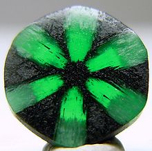

EMARALD

ABOUT:
Emeralds, like all colored gemstones, are graded using four basic parameters–the four Cs of connoisseurship: color, clarity, cut and carat weight. Normally, in the grading of colored gemstones, color is by far the most important criterion. However, in the grading of emeralds, clarity is considered a close second. A fine emerald must possess not only a pure verdant green hue as described below, but also a high degree of transparency to be considered a top gem.[5]
In the 1960s, the American jewelry industry changed the definition of emerald to include the green vanadium-bearing beryl. As a result, vanadium emeralds purchased as emeralds in the United States are not recognized as such in the UK and Europe. In America, the distinction between traditional emeralds and the new vanadium kind is often reflected in the use of terms such as "Colombian emerald".[6]